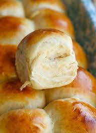

Butter Bread

Description
Butter bread is such a simple dish, yet a very flavorful one.
The bread is super fluffy and the buttery taste just makes it a very fulfilling dish.
Steps
- Open up the rolls with your hands to create a separation.
- In that separation, spread the butter around.
- Depending on the strength of your microwave, it should be 15-30 seconds.